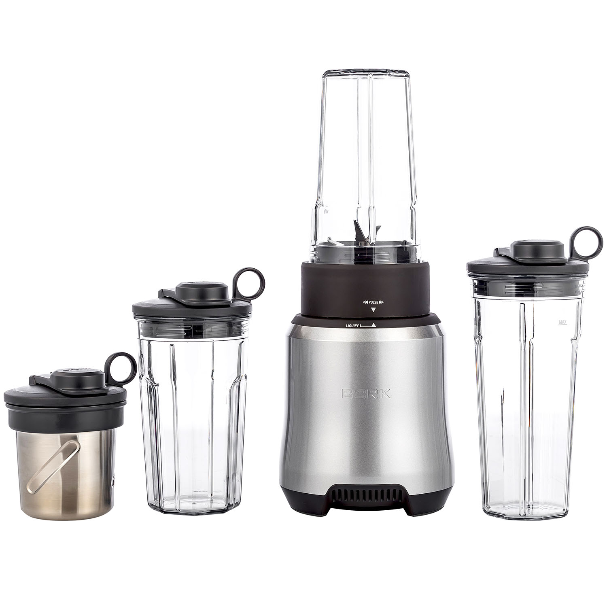
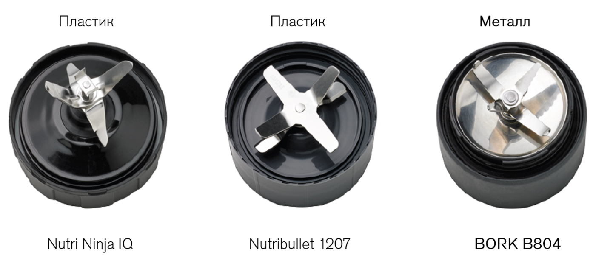
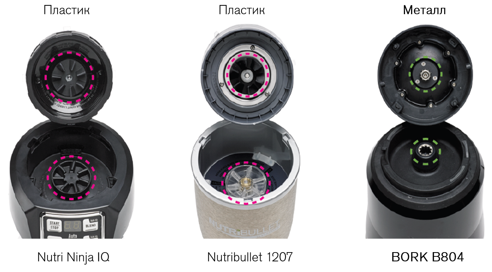
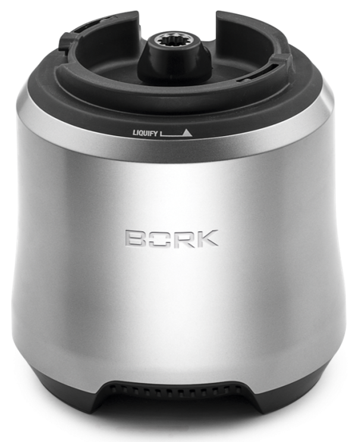
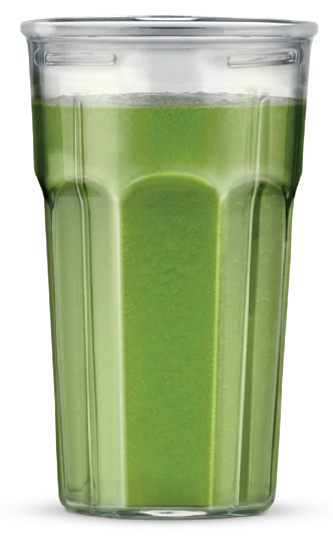
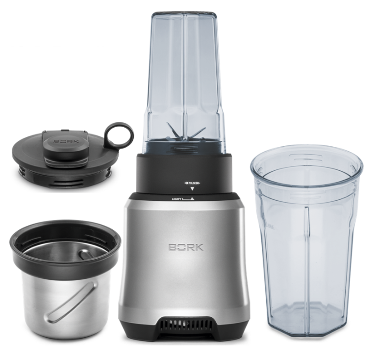
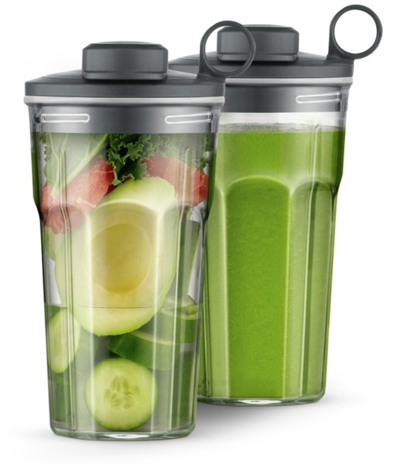
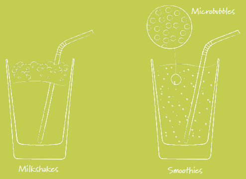
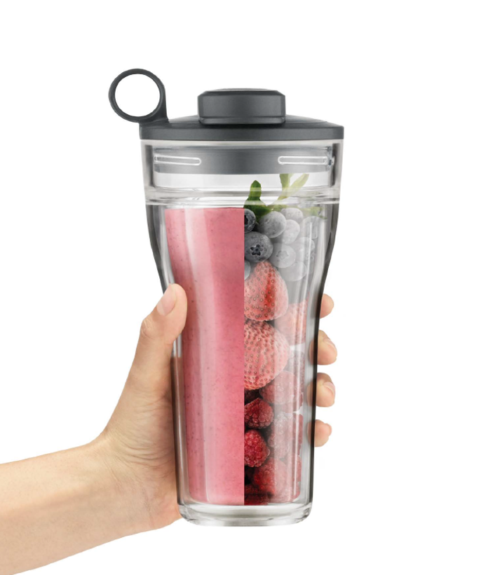
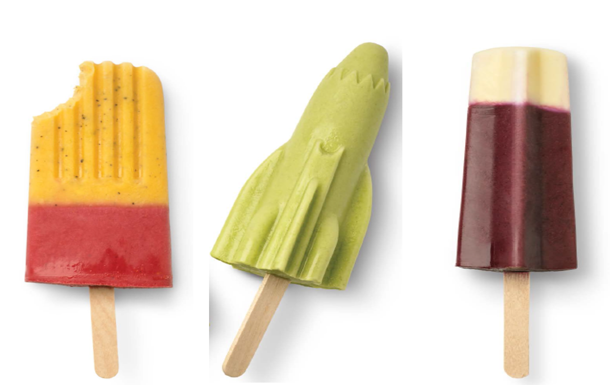

Блендер BORK B804
Устройство и комплектация
Система ножей KINETIX
Нижняя часть выполнена в форме чаши, что минимизирует образование «пустых зон». Материал изготовления металл.
Размер частиц на 42% меньше
Средний размер частиц
- Nutribullet 1207 (600 Вт): 842 нм
- Nutri Ninja Auto BL480: 628 нм
- BORK B804: 495 нм
Любопытный факт: от размера частиц продуктов меняется их вкус. Проведите дома простой эксперимент — закройте глаза и попробуйте на вкус сахарный песок, а затем сахарную пудру, и сравните результат.
Сахарный песок имеет зернистую структуру, поэтому вы не сразу почувствуете его вкус, в отличие от сахарной пудры. После растворения сахара во рту остается ощутимое карамельное послевкусие. При этом вкус сахарной пудры раскрывается немедленно, он более выраженный, насыщенный и утонченный.
Человек различает четыре типа вкуса: соленый, горький, сладкий и кислый. Вкусовые рецепторы по-разному воспринимают вкус в зависимости от размера частиц пищи. А значит, чтобы вкус раскрылся полностью и получился изумительно нежный и приятный напиток, некоторые ингредиенты смузи требуют более тщательного измельчения.
В действительности размер частиц влияет не только на текстуру, но и на вкус. То, как наши вкусовые рецепторы воспринимают соленость, сладость, кремообразность и даже послевкусие одних и тех же ингредиентов, меняется в зависимости от размера частиц пищи.
При измельчении в блендере для большинства продуктов действует одно золотое правило: чем тщательнее перемолоты ингредиенты, тем лучше, богаче вкус напитка. Блендер BORK B804 превращает свежие фрукты, овощи, орехи и зелень в смузи идеальной консистенции. Мощный двигатель в сочетании с продуманной системой лезвий позволяет достичь великолепную степень измельчения и получить смузи непревзойденной нежности.
Материал соединения
Блендер BORK B804 имеет металлическое соединение вала двигателя с приводом ножей, это обеспечивает долгий срок службы.
Металлический корпус
Корпус блендера BORK B804 выполнен из металла, что придаёт модели элегантный внешний вид, устойчивость к царапинам, изменению цвета корпуса, улучшенное охлаждение двигателя.
Чаши блендера
Из чаши удобно использовать благодаря отсутствию острых краёв. Материал изготовления чаш полимер EASTMAN TRITAN™- ударостойкий, долговечный, легко переносит мойку в посудомоечной машине.
Аргументы для продажи
- Система смешивания Kinetix
- Мощный двигатель 1000 Вт.
- Металлические соединения
- Металлический корпус
- 3 чаши с гладкими краями
- Эргономичная форма чаш
- Материал чаш Estman Tritan
- Три герметичные крышки для чаш с кольцом
- Контейнер для измельчения
- Защита от перегрузки
Густая текстура и сливочный вкус без молочных продуктов
Для приготовления сливочных смузи традиционно используются молоко и йогурты. Однако сливочную консистенцию можно получить не только с помощью молочных продуктов и их заменителей — таких, как соевое или ореховое молоко.
Если вы предпочитаете густые, похожие на сливочные смузи, загустителями могут послужить банан, манго или авокадо. Также можно использовать и другие фрукты, например, персик, нектарин, папайю, грушу или яблоко.
Добавьте в напиток предварительно замоченные семена чиа, кешью или мягкий соевый творог — они сделают смузи еще более густым и к тому же повысят в нем содержание белков.
Весь секрет в микропузырьках
В животном и растительном молоке, при взбивании, образуются воздушные пузырьки, которые стимулируют вкусовые рецепторы и улучшают их способность воспринимать вкус. Крупные пузырьки быстро лопаются, и чтобы не упустить мимолетное удовольствие, пить смузи нужно сразу же после приготовления. Чем меньше размер пузырьков, тем больше у нас времени почувствовать полный вкус и насладиться текстурой напитка.
Высокоскоростная система смешивания Kinetix в блендере BORK производит интенсивное взбивание с одновременной циркуляцией воздуха и жидкости, что обеспечивает равномерное наполнение напитка микропузырьками. Они настолько малы (их диаметр меньше миллиметра), что равномерно заполняют собой всю жидкость, делая напиток с исключительно нежной кремообразной текстурой еще воздушнее и усиливая его сливочный вкус.
Не оставляйте на потом
Лучше всего пить смузи сразу после приготовления — так напиток подарит вам максимальное количество витаминов и раскроет все разнообразие вкусовой палитры.
Если вы делаете смузи с запасом, храните его в холодильнике или термоконтейнере со льдом. Заполнив контейнер до краев, вы минимизируете количество воздуха, который может вызвать окисление. В некоторых контейнерах есть специальная помпа для откачивания лишнего воздуха и сохранения максимальной свежести продукта.
Хорошо взболтайте смузи перед употреблением. Это обеспечит однородность напитка, создаст приятную текстуру и насытит его воздухом.
Домашнее лучше магазинного
Покупные замороженные десерты, мороженое и прочие сладости из супермаркетов, как правило, содержат добавки и слишком много сахара и жиров.
Десерт должен быть натуральным, а не появляться в результате лабораторных экспериментов. Из смузи можно сделать замечательные замороженные вкусности. Поскольку ингредиенты выбираете только вы сами и отвечаете за их качество, такой десерт будет намного полезнее покупного.
Добавить в смузи сладкие нотки можно по-разному. Есть вариант подсластить напиток, взяв немного орехового масла или какао. Затем разлить его в формочки для фруктового льда — и полезный, питательный и вкусный десерт готов!